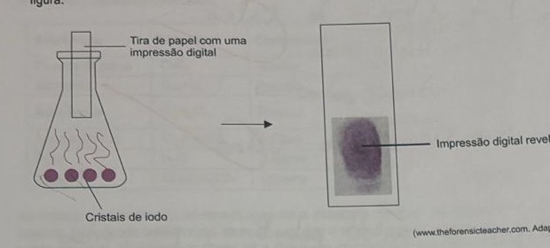
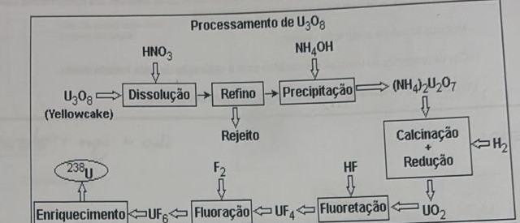
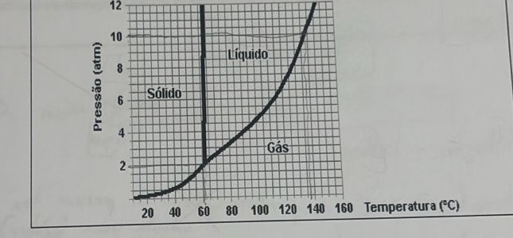
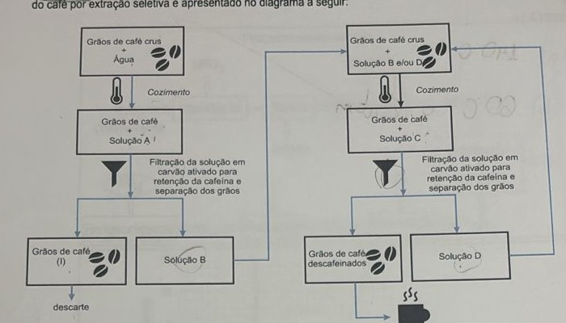

Professores: Paulo e Eduardo
Em uma cooperativa de reciclagem foi triturada uma mistura dos plásticos polietileno tereftalato (PET), polietileno de alta densidade (PEAD), policloreto de vinila (PVC) e poliestireno (PS), cujas densidades são 1,38 g/mL, 0,96 g/mL, 1,25 g/mL e 1,06 g/mL, respectivamente.
A separação dos grânulos plásticos obtidos após a trituração foi feita colocando-se a mistura em soluções apropriadas, conforme o esquema a seguir: a Mistura 1 (início) é colocada em H₂O destilada (d = 1,00 g/mL) — o que flutua vira "W" e o que afunda vira Mistura 2; a Mistura 2 é colocada em solução de CaCl₂·2H₂O 32% (d = 1,30 g/mL) — o que flutua vira "X" e o que afunda vira Mistura 3; a Mistura 3 é colocada em solução de NaCl 20% (d = 1,15 g/mL) — o que flutua vira "Y" e o que afunda vira "Z".
a) Cite o nome da técnica empregada na separação dos diferentes tipos de plástico. Para qual tipo de misturas tal técnica pode ser utilizada?
b) Quais são os plásticos correspondentes às letras W, X, Y e Z, respectivamente?
Uma medalha, supostamente de ouro puro, foi testada pelo deslocamento do volume de água contido em uma proveta (recipiente cilíndrico de vidro graduado em cm³). Para isso, a medalha, cujo peso era de 57,9 gramas, foi colocada numa proveta de 50 cm³ que continha 25 cm³ de água e mediu-se o volume de água deslocado na proveta. Sabendo-se que a densidade do ouro puro é de 19,3 g/cm³, qual será o volume final lido na proveta em cm³ se a medalha for de ouro puro?
Um resíduo industrial sólido, contendo uma mistura de fluoreto de cálcio, antraceno, ácido cítrico e ácido palmítico, foi tratado por meio de métodos de separação, com o objetivo de recuperar os componentes isolados dessa mistura. O quadro abaixo lista os componentes do resíduo e dos solventes utilizados no tratamento e algumas propriedades.
| Substância | Fórmula | Componente | Temp. Ebulição / °C | Solubilidade em água | Solubilidade em álcool |
|---|---|---|---|---|---|
| Fluoreto de cálcio | CaF₂ | Resíduo | 2533 | insolúvel | insolúvel |
| Antraceno | C₁₄H₁₀ | Resíduo | 340 | insolúvel | solúvel |
| Ácido cítrico | C₆H₈O₇ | Resíduo | 175 (decompõe-se) | solúvel | solúvel |
| Ácido palmítico | C₁₆H₃₂O₂ | Resíduo | 351 | insolúvel | miscível |
| Água | H₂O | Solvente | 100 | — | miscível |
| Etanol | CH₃CH₂OH | Solvente | 78 | miscível | — |
Ao resíduo, inicialmente, foi adicionado água até a dissolução completa dos componentes solúveis. Em seguida, foi realizada uma filtração, de modo a separar o sólido (Fração 1) da parte líquida (Fração 2). Ao sólido separado, foi adicionado etanol até a dissolução completa dos componentes solúveis. Uma nova filtração foi realizada, separando um sólido (Fração 3) do filtrado (Fração 4).
A rota de separação, resumida: Resíduo industrial + água → (filtração) → Sólido (Fração 1) e Filtrado (Fração 2); o Sólido (Fração 1) + etanol → (filtração) → Sólido (Fração 3) e Filtrado (Fração 4).
a) Qual(is) substância(s) está(ão) presente(s) nas Frações 1 e 3?
b) Ao término dessa rota de separação, não foi possível a separação de todos os componentes do resíduo. Quais componentes continuam misturados e em qual fração? Justifique sua resposta.
Vapores de iodo (I₂) formados pelo aquecimento de cristais de iodo sólido podem se dissolver em secreções gordurosas deixadas em certas superfícies, permitindo a revelação de impressões digitais, conforme a figura.

(www.theforensicteacher.com. Adaptado.)
Qual o nome da mudança de estado físico que ocorre com o iodo no processo de revelação de impressões digitais? Essa transformação ocorreu de modo endotérmico ou exotérmico?
Tem-se, num béquer, uma mistura de areia — considere apenas SiO₂ —, água salgada — considere apenas água e sal de cozinha (NaCl(aq)) — e óleo de cozinha.
Faça um fluxograma, DESCREVENDO a melhor maneira de separar cada um dos componentes citados na referida mistura, tendo em vista as seguintes informações:
- Métodos físicos de separação utilizado;
- Cite os aparelhos ou vidrarias necessários para a realização de cada método usado.
Obs: Somente os aparelhos e vidrarias essenciais para cada método.
O UF₆ gasoso produzido na etapa de fluoração é condensado para armazenamento e posterior enriquecimento (fig). O diagrama esquemático de equilíbrio de fases do UF₆ é apresentado a seguir (figura do diagrama de fases):


a) Apresente a temperatura de ebulição do UF₆ a 10 atm.
b) Indique a temperatura e a pressão em que as três fases (líquida, sólida e gasosa) estejam simultaneamente em equilíbrio.
Para se obter o café descafeinado, sem que ocorra a perda dos compostos de sabor e aroma, pode ser realizada a extração seletiva. Para promover essa extração, pode-se, por exemplo, utilizar um solvente concentrado com os compostos que não se desejam extrair. Um dos procedimentos para a descafeinação do café por extração seletiva é apresentado no diagrama a seguir:

Com base nas informações do texto, do diagrama e em seus conhecimentos, responda:
Entre as soluções A, B, C e D, qual(is) pode(m) ser considerada(s) descafeinada(s)?